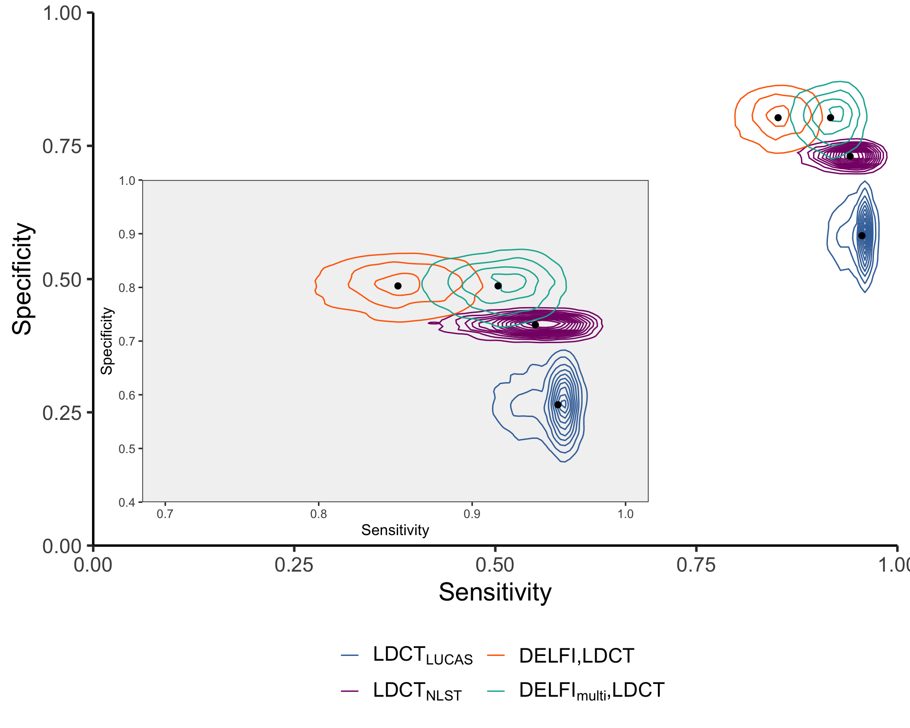

Prior predictive distributions of DELFI and LDCT in screening
19 August, 2021
Last updated: 2021-08-19
Checks: 6 1
Knit directory: reproduce_lucas_wflow/
This reproducible R Markdown analysis was created with workflowr (version 1.6.2). The Checks tab describes the reproducibility checks that were applied when the results were created. The Past versions tab lists the development history.
The R Markdown is untracked by Git. To know which version of the R Markdown file created these results, you’ll want to first commit it to the Git repo. If you’re still working on the analysis, you can ignore this warning. When you’re finished, you can run wflow_publish to commit the R Markdown file and build the HTML.
Great job! The global environment was empty. Objects defined in the global environment can affect the analysis in your R Markdown file in unknown ways. For reproduciblity it’s best to always run the code in an empty environment.
The command set.seed(20210819) was run prior to running the code in the R Markdown file. Setting a seed ensures that any results that rely on randomness, e.g. subsampling or permutations, are reproducible.
Great job! Recording the operating system, R version, and package versions is critical for reproducibility.
Nice! There were no cached chunks for this analysis, so you can be confident that you successfully produced the results during this run.
Great job! Using relative paths to the files within your workflowr project makes it easier to run your code on other machines.
Great! You are using Git for version control. Tracking code development and connecting the code version to the results is critical for reproducibility.
The results in this page were generated with repository version 4f74274. See the Past versions tab to see a history of the changes made to the R Markdown and HTML files.
Note that you need to be careful to ensure that all relevant files for the analysis have been committed to Git prior to generating the results (you can use wflow_publish or wflow_git_commit). workflowr only checks the R Markdown file, but you know if there are other scripts or data files that it depends on. Below is the status of the Git repository when the results were generated:
Ignored files:
Ignored: analysis/.DS_Store
Ignored: code/.DS_Store
Ignored: data/.DS_Store
Untracked files:
Untracked: LICENSE
Untracked: README.Rmd
Untracked: analysis/SessionInfo.Rmd
Untracked: analysis/extended_fig10a.Rmd
Untracked: analysis/extended_fig10ab.Rmd
Untracked: analysis/extended_fig10cd.Rmd
Untracked: analysis/extended_fig11.Rmd
Untracked: analysis/extended_fig12.Rmd
Untracked: analysis/extended_fig2ab.Rmd
Untracked: analysis/extended_fig2c.Rmd
Untracked: analysis/extended_fig3.Rmd
Untracked: analysis/extended_fig4.Rmd
Untracked: analysis/extended_fig5.Rmd
Untracked: analysis/extended_fig6a.Rmd
Untracked: analysis/extended_fig6b.Rmd
Untracked: analysis/extended_fig6c.Rmd
Untracked: analysis/extended_fig7.Rmd
Untracked: analysis/extended_fig8.Rmd
Untracked: analysis/extended_fig9.Rmd
Untracked: analysis/fig2a.Rmd
Untracked: analysis/fig2b.Rmd
Untracked: analysis/fig2c.Rmd
Untracked: analysis/fig2c_pt2.Rmd
Untracked: analysis/fig3.Rmd
Untracked: analysis/fig4ab.Rmd
Untracked: analysis/fig4c.Rmd
Untracked: analysis/fig5a.Rmd
Untracked: analysis/fig5b.Rmd
Untracked: analysis/fig5cdef.Rmd
Untracked: analysis/fig6b.Rmd
Untracked: analysis/fig6cdefg.Rmd
Untracked: code/PlasmaTools.lucas/
Untracked: code/model_code/
Untracked: code/models_c1/
Untracked: code/models_c2/
Untracked: code/models_c3/
Untracked: code/plot-roc.r
Untracked: code/plot-roc_with_e9.r
Untracked: code/prepare_tcga_plot_data.r
Untracked: code/preprocessing/
Untracked: code/rlucas/
Untracked: code/rpcr/
Untracked: data/Extended Data Fig.12_recurrence_analysis copy.xlsx
Untracked: data/Extended Data Fig.12_recurrence_analysis.xlsx
Untracked: data/LUCAS_metadata.xlsx
Untracked: data/LUCAS_pts_50_80_py20_excluding prior cancers.xlsx
Untracked: data/TCGA_Lung/
Untracked: data/TNM_stage_DELFI_4a.xlsx
Untracked: data/TNM_stage_DELFI_4b.xlsx
Untracked: data/all_sclc_vs_all_healthy_fragment_size.txt
Untracked: data/all_sclc_vs_all_healthy_tfbs_coverage.txt
Untracked: data/ascl1_rel_cov_10v10.txt
Untracked: data/ascl1_tpm.txt
Untracked: data/cristiano-GCLOESS-lucas-cov-z-mito-orig-delfi473.rds
Untracked: data/cristiano-filtered-lucas2-cov-z-mito-gcloess-orig-delfi473.rds
Untracked: data/cristiano2019_tableS7.csv
Untracked: data/delfi_sensitivities.csv
Untracked: data/fig5_data.xlsx
Untracked: data/gc_correction.R/
Untracked: data/ichor, fragm length DELFI.xlsx
Untracked: data/id_subtype_key.txt
Untracked: data/lucas-holdout-preds.csv
Untracked: data/lucas_5mbs_delfi473.csv
Untracked: data/median_lengths.R/
Untracked: data/model_seq_glm.rds
Untracked: data/pcr_experiment.rda
Untracked: data/sclc_vs_other_fragment_size.txt
Untracked: data/score.seq_fig3b_filtered.rds
Untracked: data/sensitivity, specificity numbers in LUCAS_03_07_21.xlsx
Untracked: data/stats.rds
Untracked: data/ten_sample_rel_size.txt
Untracked: data/testing-set.csv
Untracked: data/tfbs_coverage.txt
Untracked: data/tpm.txt
Untracked: data/training-set.csv
Untracked: data/validation_preds.csv
Unstaged changes:
Modified: analysis/_site.yml
Modified: analysis/index.Rmd
Modified: analysis/license.Rmd
Note that any generated files, e.g. HTML, png, CSS, etc., are not included in this status report because it is ok for generated content to have uncommitted changes.
There are no past versions. Publish this analysis with wflow_publish() to start tracking its development.
Modeling DELFI and LDCT screening
Performance of LDCT
# A tibble: 12 x 4
# Groups: method, study, statistic [12]
method study statistic data
<chr> <chr> <chr> <list>
1 LDCT LUCAS sensitivity <tibble [5 × 3]>
2 LDCT NLST sensitivity <tibble [2 × 3]>
3 DELFI LUCAS sensitivity <tibble [2 × 3]>
4 DELFImulti LUCAS sensitivity <tibble [2 × 3]>
5 LDCT LUCAS specificity <tibble [2 × 3]>
6 LDCT NLST specificity <tibble [2 × 3]>
7 DELFI LUCAS specificity <tibble [2 × 3]>
8 DELFImulti LUCAS specificity <tibble [2 × 3]>
9 DELFI,LDCT LUCAS sensitivity <tibble [2 × 3]>
10 DELFI,LDCT LUCAS specificity <tibble [2 × 3]>
11 DELFImulti,LDCT LUCAS sensitivity <tibble [2 × 3]>
12 DELFImulti,LDCT LUCAS specificity <tibble [2 × 3]>Weight sensitivity estimates by nlst
Warning: Missing column names filled in: 'X1' [1]
── Column specification ────────────────────────────────────────────────────────
cols(
X1 = col_character(),
`DELFI, LDCT` = col_character(),
`DELFImulti, LDCT` = col_character(),
`Specificity cutoff` = col_character()
)| Stage | DELFI,LDCT | DELFImulti,LDCT | Stage | NLST Frequency |
|---|---|---|---|---|
| Stage I (n=15) | 0.80 | 0.87 | I | 159 |
| Stage II (n=7) | 0.86 | 1.00 | II | 20 |
| Stage III (n=35) | 0.94 | 0.97 | III | 60 |
| Stage IV (n=72) | 0.90 | 0.96 | IV | 45 |
The overall sensitivity for DELFI,LDCT and DELFImulti,LDCT is an average of the sensitivity (\(se\)) estimates in LUCAS weighted by the stage distribution of lung cancers in NLST: \(\sum_i \frac{se_i n_i}{N}\) where \(N=284\) and the frequencies of stage I-IV lung cancers in NLST are 159, 20, 60, and 45, respectively. The weighted sensitivity for DELFI,LDCT is 85.0 and the weighted sensitivity for DELFImulti,LDCT is 91.5.
# A tibble: 4 x 6
# Groups: method, study, statistic [2]
method study statistic parameter value distribution
<chr> <chr> <chr> <chr> <dbl> <chr>
1 DELFI,LDCT LUCAS sensitivity shape1 85.0 beta
2 DELFI,LDCT LUCAS sensitivity shape2 15.0 beta
3 DELFImulti,LDCT LUCAS sensitivity shape1 91.5 beta
4 DELFImulti,LDCT LUCAS sensitivity shape2 8.55 beta Scale for 'x' is already present. Adding another scale for 'x', which will
replace the existing scale.Scale for 'y' is already present. Adding another scale for 'y', which will
replace the existing scale.
Predictive distribution for future study
In a future study of 100,000 participants, what is our predictive distribution for - number individuals screened - lung cancer individuals screened - number of LDCT scans - false positives leading to unnecessary follow-up procedures - individuals with lung cancer not identified ( false negatives ) - sensitivity in overall population
Imagine that the size of the screening study is determined by the number of samples collected in a finite period of time such that studies with lower compliance have fewer participants.
Performance of LDCT alone and DELFI+LDCT
create copy for later comparison
Prior predictive distributions
All of the figures here are made from the object predictive2.
Warning: Removed 1 rows containing non-finite values (stat_boxplot).Warning: Removed 73 rows containing non-finite values (stat_boxplot).
| method_study | statistic | 50% | 2.5% | 97.5% |
|---|---|---|---|---|
| LDCT,LUCAS | acc | 0.58 | 0.49 | 0.68 |
| LDCT,NLST | acc | 0.73 | 0.70 | 0.76 |
| DELFI,LDCT,LUCAS | acc | 0.80 | 0.72 | 0.87 |
| DELFImulti,LDCT,LUCAS | acc | 0.80 | 0.72 | 0.87 |
| DELFI,LUCAS | acc | 0.70 | 0.61 | 0.79 |
| DELFImulti,LUCAS | acc | 0.70 | 0.61 | 0.78 |
| LDCT,LUCAS | fpr | 0.42 | 0.32 | 0.52 |
| LDCT,NLST | fpr | 0.27 | 0.24 | 0.30 |
| DELFI,LDCT,LUCAS | fpr | 0.20 | 0.13 | 0.28 |
| DELFImulti,LDCT,LUCAS | fpr | 0.20 | 0.13 | 0.28 |
| DELFI,LUCAS | fpr | 0.30 | 0.21 | 0.39 |
| DELFImulti,LUCAS | fpr | 0.30 | 0.22 | 0.39 |
| LDCT,LUCAS | number_screened | 5843.00 | 3175.78 | 9658.30 |
| LDCT,NLST | number_screened | 5843.00 | 3148.00 | 9680.25 |
| DELFI,LDCT,LUCAS | number_screened | 57908.50 | 38964.60 | 75397.00 |
| DELFImulti,LDCT,LUCAS | number_screened | 57813.00 | 38473.55 | 75515.30 |
| DELFI,LUCAS | number_screened | 57839.50 | 38553.85 | 75812.17 |
| DELFImulti,LUCAS | number_screened | 57776.50 | 38700.95 | 75548.15 |
| LDCT,LUCAS | TP | 47.00 | 17.00 | 108.00 |
| LDCT,NLST | TP | 47.00 | 17.00 | 106.00 |
| DELFI,LDCT,LUCAS | TP | 422.00 | 185.00 | 839.02 |
| DELFImulti,LDCT,LUCAS | TP | 450.00 | 200.00 | 887.00 |
| DELFI,LUCAS | TP | 426.00 | 186.00 | 846.00 |
| DELFImulti,LUCAS | TP | 439.00 | 197.00 | 870.02 |
| LDCT,LUCAS | tpr | 0.95 | 0.86 | 1.00 |
| LDCT,NLST | tpr | 0.94 | 0.84 | 1.00 |
| DELFI,LDCT,LUCAS | tpr | 0.85 | 0.77 | 0.92 |
| DELFImulti,LDCT,LUCAS | tpr | 0.92 | 0.85 | 0.97 |
| DELFI,LUCAS | tpr | 0.86 | 0.78 | 0.93 |
| DELFImulti,LUCAS | tpr | 0.89 | 0.81 | 0.95 |
Positive predictive value
| method_study | 50% | 2.5% | 97.5% |
|---|---|---|---|
| LDCT,LUCAS | 1.94 | 0.83 | 3.82 |
| LDCT,NLST | 2.97 | 1.31 | 5.50 |
| DELFI,LDCT,LUCAS | 3.65 | 1.63 | 7.47 |
| DELFImulti,LDCT,LUCAS | 3.92 | 1.75 | 7.93 |
| DELFI,LUCAS | 2.49 | 1.13 | 4.90 |
| DELFImulti,LUCAS | 2.56 | 1.19 | 4.95 |
Percent improvement of PPV from LDCT,LUCAS
| method_study | 50% | 2.5% | 97.5% |
|---|---|---|---|
| LDCT,NLST | 53.09 | 57.83 | 43.98 |
| DELFI,LDCT,LUCAS | 88.14 | 96.39 | 95.55 |
| DELFImulti,LDCT,LUCAS | 102.06 | 110.84 | 107.59 |
| DELFI,LUCAS | 28.35 | 36.14 | 28.27 |
| DELFImulti,LUCAS | 31.96 | 43.37 | 29.58 |
Text from manuscript
To examine how our approach would perform for the overall detection of individuals with lung cancer at a population scale, we evaluated the DELFI model in a theoretical population of 100,000 high‐risk individuals using Monte Carlo simulations. Using the estimated sensitivities and specificities of LDCT alone or with DELFI as a prescreen in this hypothetical population, we modeled the uncertainty of these parameters using probability distributions centered at empirical estimates obtained from the NLST and/or LUCAS cohorts (Fig. 5b, Supplementary Table 8). The likely prevalence of lung cancer in this population using the NLST study estimate of 0.91% would be in 910 individuals (95% CI, 428-1584). Despite the recommendations for LDCT screening, adherence in the US is only 5.9%, resulting in an average of 5,979 tested individuals (95% CI, 3,176-9,658). As blood tests offer high accessibility and compliance, with adherence rates of 80‐90% reported for blood‐based biomarkers, we assumed that 80% (95 CI, 39-76%) of the lung cancer screening population would be tested using the combined approach. Monte Carlo simulations from these probability distributions revealed that LDCT alone detected an average of 51 individuals (95% CI, 17-108) with lung cancer (Fig. 5c). Using DELFI as a prescreen for LDCT, on average we would detect 394 additional lung cancer cases, or a 9‐fold increase (95% CI, 4.4-19.6-fold increase) compared to LDCT alone (Fig. 5c). The combined approach would not only substantially improve detection of lung cancer, but would be expected to increase the accuracy of the test, reduce the number of unnecessary procedures, and increase positive predictive value (PPV) from 1.9% (95% CI, 0.8-3.8%) for LDCT alone to 3.9% for DELFI and LDCT (95% CI, 1.8-7.9%, Fig. 5 d‐f). These analyses suggest a significant population‐wide benefit for combining a high‐sensitivity blood‐based early detection test with a subsequent diagnostic LDCT for detection of lung cancer.
Methods
Modelling of DELFI performance in a screening population
To assess performance of LDCT alone and DELFI followed by LDCT in a hypothetical screening population of 100,000 individuals, we used Monte Carlo simulations to capture uncertainty of unknown parameters sensitivity, specificity, adherence, and lung cancer prevalence. Prior models of sensitivity for LUCAS alone were centered loosely on empirical estimates from the LUCAS and NLST cohorts: \[\begin{align*} \theta_{1,M} &\sim \left\{ \begin{array}{ll} \pi \times \text{N}(0.96, 0.005) + (1-\pi) \times \text{N}(0.94, 0.02) & M=\text{LDCT}_{\text{LUCAS}}\\ \text{Beta}(93.8, 6.2) & M = \text{LDCT}_{\text{NLST}}\\ \text{Beta}(85, 15) & M = \text{DELFI,LDCT}\\ \text{Beta}(91, 9) & M=\text{DELFI}_{\text{multi}}\text{,LDCT}. \end{array} \right. \end{align*}\] We sampled \(\pi \sim \text{Bernoulli}(0.5)\).
For specificity, prior models were \[\begin{align*} \theta_{2,M} &\sim \left\{ \begin{array}{ll} \text{Beta}(58, 42)& M = \text{LDCT}_{\text{LUCAS}} \\ \text{Beta}(730, 270) & M = \text{LDCT}_{\text{NLST}} \\ \text{Beta}(80, 20) & M = \text{DELFI,LDCT} \\ \text{Beta}(80, 20) & M=\text{DELFI}_{\text{multi}}\text{,LDCT}. \end{array} \right. \end{align*}\]
The number of individuals screened in our simulated screening study depends on adherence to screening guidelines. Letting \(n\) denote the size of our screening study, our sampling model for \(n\) is given by \[\begin{align*} n &\sim \text{Binomial}(10^5, \eta) \\ \eta &\sim \text{beta}(\alpha_n, \beta_n).\\ \end{align*}\] For LDCT alone, shape parameters \(\alpha_n\) and \(\beta_n\) were 12 and 188 (@ref), while for DELFI \(\pm\) CEA followed by LDCT shape parameters were 15 and 11 (@ref PSA compliance paper). Conditional on the size of our screening study and draws of \(\theta_{1,M}\) and \(\theta_{2,M}\) from their respective prior distributions, we sampled the disease status, \(y\), and screening results, \(x\), conditional on \(y\): \[\begin{align*} y_i &\sim \text{Bernoulli}(\psi)~\text{for } i = 1, ..., n \\ \psi &\sim \text{Beta}(9.1, 990.9) \\ x_i | \{y_i = 1, M\} &\sim \text{Bernoulli}(\theta_{1,M}) \\ x_i | \{y_i = 0, M\} &\sim \text{Bernoulli}(1-\theta_{2,M}). \end{align*}\] The informative prior for prevalence, \(\psi\), in our hypothetical population ensures that our screening study will be comprised predominantly of individuals without cancer, but allows the true prevalence to be smaller or larger than the estimate of 0.91% from @study/population (@ref). The number of lung cancers detected, accuracy, false positive rate, and positive predictive value were calculated from the joint distribution of \(\pmb{x}\) and \(\pmb{y}\). We repeated the above sampling procedure 10,000 times, thereby obtaining predictive distributions for these statistics that reflect uncertainty of sensitivity, specificity, adherence, and prevalence.
R version 4.0.5 (2021-03-31)
Platform: x86_64-apple-darwin17.0 (64-bit)
Running under: macOS Catalina 10.15.7
Matrix products: default
BLAS: /Library/Frameworks/R.framework/Versions/4.0/Resources/lib/libRblas.dylib
LAPACK: /Library/Frameworks/R.framework/Versions/4.0/Resources/lib/libRlapack.dylib
locale:
[1] en_US.UTF-8/en_US.UTF-8/en_US.UTF-8/C/en_US.UTF-8/en_US.UTF-8
attached base packages:
[1] grid stats graphics grDevices utils datasets methods
[8] base
other attached packages:
[1] here_1.0.1 kableExtra_1.3.4 readxl_1.3.1 mvtnorm_1.1-1
[5] fs_1.5.0 forcats_0.5.1 stringr_1.4.0 dplyr_1.0.6
[9] purrr_0.3.4 readr_1.4.0 tidyr_1.1.3 tibble_3.1.2
[13] tidyverse_1.3.1 magrittr_2.0.1 ggplot2_3.3.3 jcolors_0.0.4
[17] workflowr_1.6.2
loaded via a namespace (and not attached):
[1] Rcpp_1.0.6 svglite_2.0.0 lubridate_1.7.10 ps_1.6.0
[5] assertthat_0.2.1 rprojroot_2.0.2 digest_0.6.27 utf8_1.2.1
[9] R6_2.5.0 cellranger_1.1.0 backports_1.2.1 reprex_2.0.0
[13] evaluate_0.14 highr_0.9 httr_1.4.2 pillar_1.6.1
[17] rlang_0.4.11 rstudioapi_0.13 jquerylib_0.1.4 rmarkdown_2.8
[21] labeling_0.4.2 webshot_0.5.2 munsell_0.5.0 broom_0.7.6
[25] compiler_4.0.5 httpuv_1.6.1 modelr_0.1.8 xfun_0.23
[29] systemfonts_1.0.2 pkgconfig_2.0.3 htmltools_0.5.1.1 tidyselect_1.1.1
[33] viridisLite_0.4.0 fansi_0.5.0 crayon_1.4.1 dbplyr_2.1.1
[37] withr_2.4.2 later_1.2.0 MASS_7.3-54 jsonlite_1.7.2
[41] gtable_0.3.0 lifecycle_1.0.0 DBI_1.1.1 git2r_0.28.0
[45] scales_1.1.1 cli_2.5.0 stringi_1.6.2 farver_2.1.0
[49] promises_1.2.0.1 xml2_1.3.2 bslib_0.2.5.1 ellipsis_0.3.2
[53] generics_0.1.0 vctrs_0.3.8 tools_4.0.5 glue_1.4.2
[57] hms_1.1.0 yaml_2.2.1 colorspace_2.0-1 isoband_0.2.4
[61] rvest_1.0.0 knitr_1.33 haven_2.4.1 sass_0.4.0